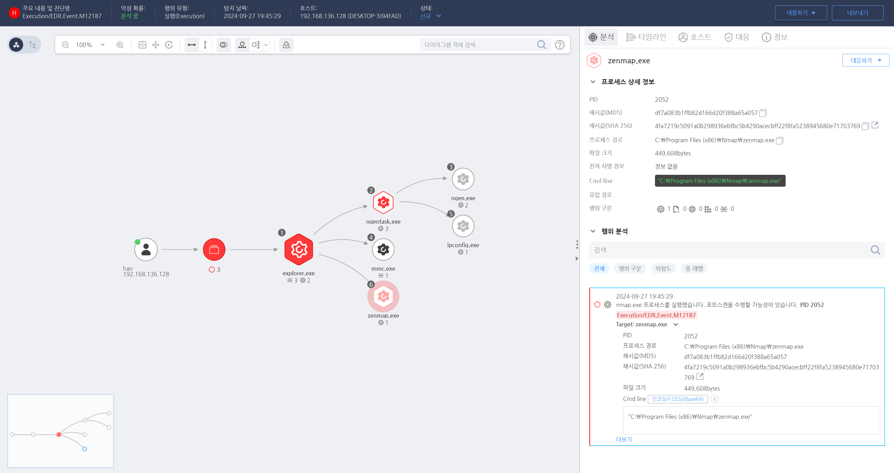

T1046.000.03 Network Service Discovery
D3FEND
MITRE ATT&CK 액션을 기준으로 대응 방안을 작성
Detection
Nmap과 같은 네트워크 스캐닝 도구는 비정상적인 네트워크 트래픽을 생성하므로, 이를 모니터링하여 탐지할 수 있다. Nmap은 다양한 스캔 옵션을 제공하므로, 이를 탐지하기 위해서는 패턴화된 네트워크 행동을 탐지하거나 Nmap 실행을 식별하여 탐지해야한다.
- 비정상적인 포트 스캔 탐지 : Nmap은 다수의 포트에 대해 스캐닝을 수행하므로 짧은 시간 내에 여러 개의 포트로 전송된 트래픽을 모니터링하면 포트 스캔 시도를 탐지할 수 있다.
- Nmap 특유의 트래픽 패턴 탐지 : Nmap은 특정 패턴을 가진 패킷을 전송하기 때문에 이를 통해 탐지할 수 있다. 예를 들어, Nmap OS 탐지 시 특정 시그니처가 포함된 패킷이 생성된다.
- 비정상적인 ICMP 트래픽 탐지 : Nmap Ping 스캔은 다량의 ICMP 패킷을 생성할 수 있다. 대량의 ICMP 요청이 짧은 시간 내에 발생하는 경우 이를 모니터링하여 탐지할 수 있다.
Detection(EDR)

- Splunk 탐지 예시
- index=networktraffic
sourcetype=icmp
| stats count by srcip, dest_ip
| where count > 50
Response
- 네트워크 트래픽 차단 : Nmap 스캔을 시도한 IP 주소를 확인한 후 해당 IP를 방화벽에서 차단한다. 이를 통해 스캔을 시도하는 공격자의 추가적인 정찰 활동을 차단할 수 있다.
- 공격자가 사용하는 네트워크 경로 조사 : Nmap 스캔이 탐지되면, 공격자가 사용하는 네트워크 경로 및 IP 주소를 조사하여 다른 공격자가 동일한 방법으로 침투했는지 확인한다. 이를 통해 네트워크 전반에 대한 추가적인 스캔이나 공격 시도를 차단할 수 있다.
- 관련 시스템 격리 : 스캔 시도가 발생한 시스템이 타겟이 되거나 이미 침해되었을 가능성을 고려해 해당 시스템을 네트워크에서 격리하고 추가 조사를 진행한다. 네트워크 탐지 시스템(NIDS)에서 해당 시스템의 활동을 집중적으로 모니터링해야 한다.
- 침해 조사 및 포렌식 분석 : 스캔이 성공적으로 이루어진 경우, 공격자가 얻은 정보나 시스템에 남긴 흔적을 분석한다. 스캔 후 취약한 서비스가 공격 대상이 되었는지, 백도어가 설치되었는지 등을 파악해야 한다.
Mitigations
네트워크 세그멘테이션 및 방화벽 설정
- 내부 네트워크와 외부 네트워크 간의 트래픽을 엄격히 제한하여 공격자가 스캐닝할 수 있는 시스템을 최소화한다. 방화벽을 통해 불필요한 포트 및 서비스를 차단하고, 공개적으로 노출된 서비스만을 허용한다.
침입 방지 시스템(IPS) 적용
- IPS(Intrusion Prevention System)를 활용해 Nmap과 같은 도구에서 발생하는 스캐닝 시도를 실시간으로 탐지하고, 자동으로 차단할 수 있다. IPS는 Nmap의 트래픽 패턴을 인식해 스캔 시도를 중단시킨다.
서비스 최소화 및 취약한 포트 비활성화
- 네트워크 상에서 스캔할 수 있는 포트 및 서비스를 최소화하는 것이 중요하다. 불필요한 서비스는 비활성화하거나 제거하고, 패치되지 않은 취약한 서비스가 노출되지 않도록 한다. 특히 공격자가 흔히 스캔하는 22(SSH), 80(HTTP), 443(HTTPS) 등의 포트는 강화된 보안 정책을 적용해야 한다.
네트워크 트래픽 암호화 및 VPN 사용
- 내부 네트워크에 대한 스캐닝을 방지하기 위해 중요한 서비스는 암호화된 트래픽으로 통신하도록 설정하고, 원격 접근 시에는 VPN을 사용해 네트워크 스캐닝을 피할 수 있다. 이를 통해 공격자가 내부 시스템을 스캔할 가능성을 줄인다.
비정상적인 네트워크 활동 모니터링
- 네트워크 모니터링 시스템(NMS)를 사용하여 비정상적인 트래픽이 발생할 때 경고를 받을 수 있도록 설정한다. 이를 통해 초기 정찰 단계에서 공격자의 활동을 빠르게 탐지할 수 있다.
Affected Techniques
Action 실행시 함꼐 영향을 받는 다른 Techniqes
| ATT&CK |
| T1059.001 |
| T1070.004 |
| D3FEND |
| D3-SCA System Call Analysis |
| D3-NTF Network Traffic Filtering |
| D3-ITF Inbound Traffic Filtering |
| D3-OTF Outbound Traffic Filtering |